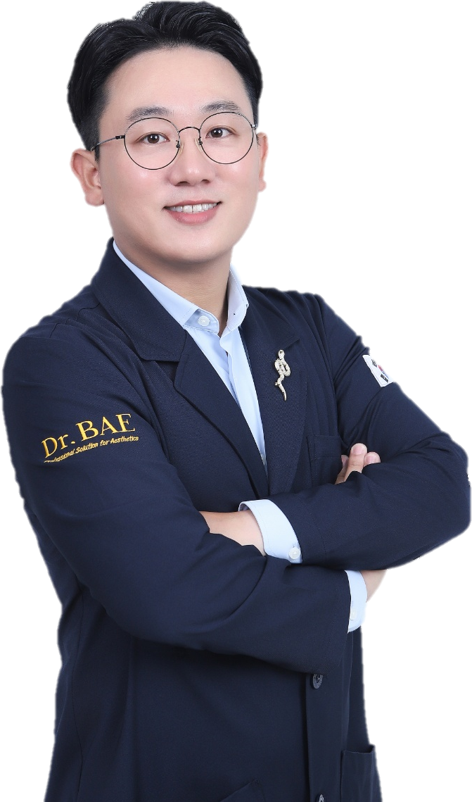
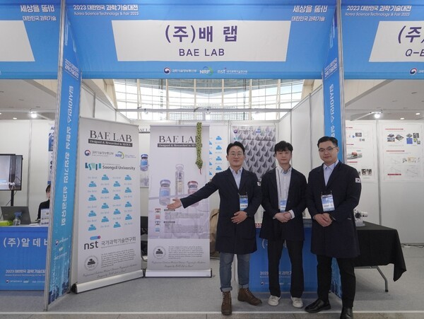
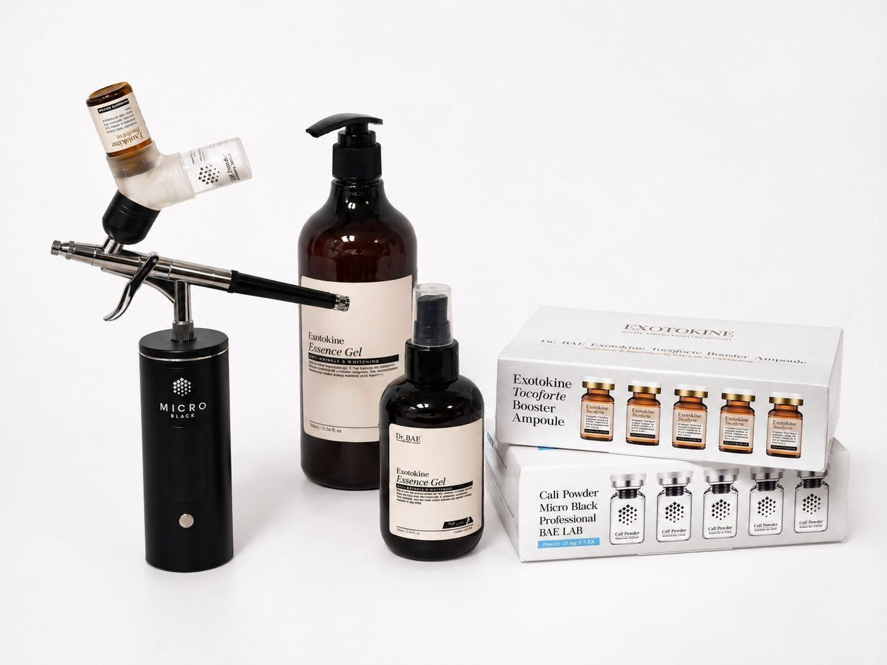
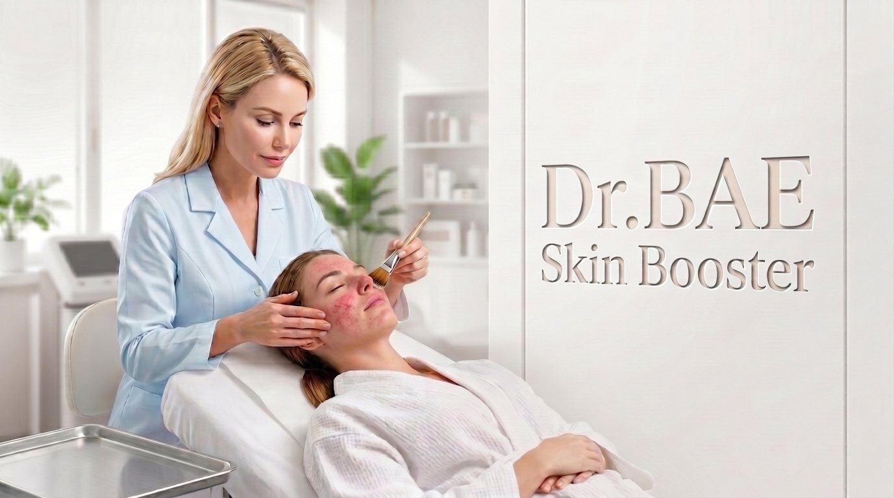
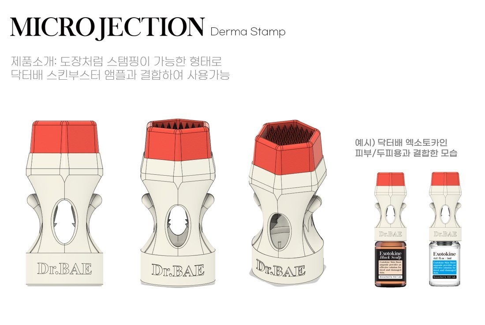
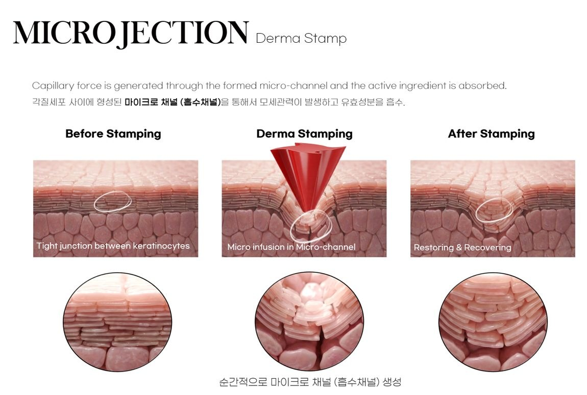
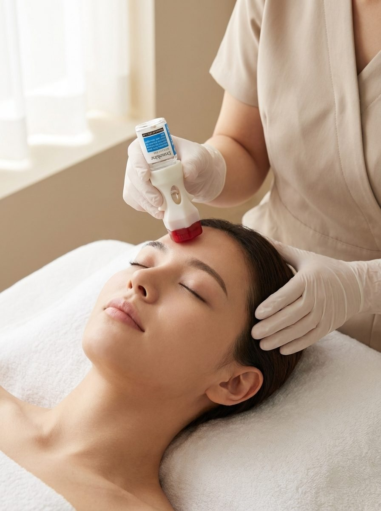
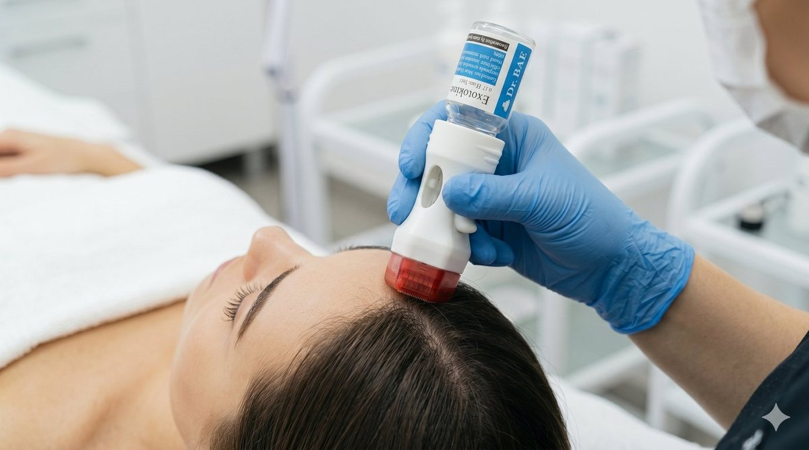

항목을 눌러 펼쳐 보세요
01
Brand
닥터배는 어떤 브랜드인가요
대학에서 시작된 전문가용 스킨부스터 · 흡수 디바이스 브랜드
대학에서 시작된 전문가용 스킨부스터 & 흡수 디바이스 브랜드
연구실에서 시작해, 그대로 제품이 되었습니다
닥터배(DR.BAE)는 ㈜배랩의 브랜드입니다. 피부에 바르는 전문가용 스킨부스터와, 그것이 피부에 고르게 닿도록 돕는 흡수 디바이스를 함께 만듭니다. 숭실대학교 의공학 연구실의 연구가 정부의 실험실 창업 지원 사업('창업선도대학')을 통해 연구실 기업(Lab Startup)으로 이어지며 만들어진 브랜드입니다.
보통의 화장품은 브랜드가 제조사에 의뢰해 만들어집니다. 닥터배는 반대로, 연구실이 직접 원료를 연구하고 그 기술이 바로 제품이 된 경우입니다. 그래서 "이 성분이 어디에서 왔고, 누가 만들었는지"를 끝까지 설명할 수 있습니다.
원료를 만드는 회사와 기기를 만드는 회사는 보통 다릅니다. 성분 회사가 남의 기기를 빌려 쓰거나, 기기 회사가 남의 원료를 담는 구조가 대부분입니다. 닥터배는 두 가지를 같은 연구실에서 함께 개발했습니다 — 이것이 브랜드 이름 앞에 '전문가용'을 붙이는 근거입니다.

배원규 교수 ㈜배랩 창업자 · 기술 개발자 | 숭실대학교 의공학 연구실
- 서울대학교 의공학 박사
- 서울대학교 의과대학
- Stanford University 박사후연구원
- 현 숭실대학교 부교수 · 재직 11년차
피부에 성분이 어떻게 흡수되는지를 연구하는 경피(經皮) 전달 분야에서 국제적으로 인정받는 연구자입니다. 독사의 송곳니가 독을 흘려보내는 구조에서 착안한 연구는 2019년 8월 국제 학술지 Science Translational Medicine에 표지 논문으로 실렸고, 이 원리가 닥터배의 전달 기술로 이어졌습니다.
2018년, 배원규 교수는 대학 실험실에서 ㈜배랩을 창업했습니다. 교육부 · 과학기술정보통신부와 숭실대학교가 함께 지원한 실험실 창업 사업으로 출발한 회사입니다. 이듬해 독사의 어금니 구조에서 착안한 경피 전달 기술이 국제 학술지 표지에 실리며 학계의 주목을 받았고, 2021년에는 경제지 포브스코리아가 그의 연구를 조명했습니다. 논문 속 원천기술을 실제로 대량생산하는 데 성공한 뒤, 해외로 나아가고 있습니다.
국가가 인정한 연구
배원규 교수의 연구는 회사 안에서만 좋은 평가를 받은 것이 아닙니다. 국가 차원의 연구 성과 평가에서 두 번 이름을 올렸습니다.
'언론이 주목한 10대 기초연구 지원성과' 선정
그해 국가 기초연구 성과 가운데 대표 10건에 뽑혔습니다. 독사의 어금니에서 착안한 경피 전달 기술이 그중 하나였습니다.
대한민국 과학기술대전 '딥사이언스 기업' 선정
'세상을 바꿀 대한민국 과학기술'을 주제로 열린 행사에서, 정부와 한국연구재단의 지원으로 성과를 낸 딥사이언스 기업 5곳에 ㈜배랩이 포함됐습니다.

2023 대한민국 과학기술대전 ㈜배랩 부스 — 연구원들이 스킨부스터와 경피 전달 기술을 소개하고 있습니다. ⓒ배랩
당시 언론은 배랩의 기술을 "혁신적인 '경피전달 플랫폼'"이라고 소개했습니다. — 더케이뷰티사이언스, 2023년 11월 12일
고객님이 확인하실 수 있는 것들
연구자가 공개되어 있습니다
누가 개발했는지, 어느 연구실에서 나왔는지가 브랜드에 그대로 적혀 있습니다.
식물에서 얻은 원료
핵심 원료인 세포외소포(EV)는 병풀(시카)에서 얻은 식물 유래 원료입니다. 사람이나 동물에서 얻은 원료가 아닙니다.
온라인 공동구매를 하지 않습니다
전문가 관리실에만 공급하는 라인으로, 8년간 가격과 유통 질서를 지켜 왔습니다.
해외 시장에도 공급합니다
유럽 등 해외 메디컬 에스테틱 시장에도 수출되고 있습니다.
02
Why Skin Booster
왜 스킨부스터인가요
한 번에 크게보다, 좋은 컨디션을 길게 — 스킨 롱제비티
관리의 흐름이 바뀌었습니다 — 스킨 롱제비티
예전에는 문제가 생기면 한 번에 크게 잡는 관리였습니다. 지금은 좋은 컨디션을 오래 유지하는 쪽으로 흐름이 옮겨 왔습니다. 이것을 스킨 롱제비티(Skin Longevity) · 슬로우에이징이라고 부릅니다.
스킨부스터는 그 흐름의 중심에 있는 관리입니다. 이제는 선택 항목이 아니라, 관리 프로그램의 메인 자리를 차지합니다.
병원과 관리실은 역할이 다릅니다
같은 '스킨부스터'라는 말을 쓰지만, 어디서 받느냐에 따라 완전히 다른 관리입니다.
병원에서는
- 의료진이 의료 행위로 다룹니다
- 피부 속으로 직접 넣는 방식입니다
- 의약품 · 의료기기가 사용됩니다
관리실에서는
- 화장품 앰플을 바르고, 미용기기로 각질층 수준까지 고르게 전달합니다
- 피부를 뚫지 않아 관리 후 바로 일상으로 돌아가실 수 있습니다
- 짧은 주기로 꾸준히 이어가는 롱텀 케어입니다
두 가지는 서로 대체하는 관계가 아닙니다. 목적도 방식도 다릅니다. 닥터배가 하는 것은 화장품 범위의 관리이며, 이 페이지에서 말씀드리는 것도 그 범위 안입니다.
그럼 일반 화장품과는 무엇이 다른가요
화장품법에 '스킨부스터'라는 유형이 따로 있는 것은 아닙니다. 업계에서 피부 목적에 맞게 원료를 한 단계 끌어올린 전문가용 앰플을 그렇게 부릅니다. 닥터배가 그 이름을 쓰는 근거는 세 가지입니다.
활성 원료의 비중
엑소토카인 블루는 전성분 47종 가운데 절반 이상이 활성 원료입니다. 물에 몇 가지만 섞은 앰플이 아닙니다.
원료를 직접 정제합니다
핵심 원료인 병풀 세포외소포는 연구실이 직접 분리 · 정제합니다. 반도체 미세가공 연구에서 나온 마이크로 · 나노 이중 필터로 큰 입자부터 미세 불순물까지 단계적으로 걸러냅니다.
열면 그날 씁니다
방부 부담을 줄인 배합이라 5ml 유리 바이알에 단회용으로 밀봉했습니다. 원료가 가장 좋은 상태일 때 바로 쓰기 위한 구조입니다.
그리고 '어떻게 닿게 하느냐'
아무리 원료를 끌어올려도, 마지막 관문이 하나 남습니다. 피부에 고르게 닿아야 한다는 것입니다.
좋은 성분도, 그냥 바르면 겉돕니다
피부의 가장 바깥층(각질층)은 원래 바깥 물질을 막도록 설계된 층입니다. 그래서 아무리 좋은 원료라도 손으로만 바르면 표면에 고르지 않게 남기 쉽습니다.
그래서 관리실에서는 '전달'을 함께 합니다
초음파 · 갈바닉 · LED · 에어건 같은 미용기기를 사용해 앰플이 각질층 수준까지 고르게 닿도록 도와드립니다. 주사나 니들이 아닌, 피부를 뚫지 않는 방식입니다.
닥터배는 원료와 전달을 같이 연구했습니다
대부분의 브랜드는 원료만, 혹은 기기만 다룹니다. 닥터배는 원료(식물 유래 세포외소포)와 전달 기술을 같은 연구실에서 함께 개발했습니다.
한 번에 크게보다, 꾸준히 길게
요즘 피부 관리의 흐름은 한 번의 이벤트가 아니라 좋은 컨디션을 오래 유지하는 것입니다. 스킨부스터는 그 흐름의 중심에 있는 관리입니다.
오늘 열리는 유리 바이알에 대하여
- 닥터배 스킨부스터는 5ml 유리 바이알에 담겨 있습니다.
- 단회용 밀봉 제품으로, 오늘 고객님의 관리를 위해 새 병을 개봉합니다.
- 남은 양을 다음 고객이나 다음 회차로 넘겨 쓰지 않습니다.
- 방부 부담을 줄인 배합과 단회용 밀봉이 짝을 이루는 구조입니다.
- 개봉 직후가 원료가 가장 좋은 상태입니다. 그래서 열면 그날 씁니다.
03
Line-up
닥터배 스킨부스터 6종
5ml 유리 바이알 · 제품을 눌러 확인해 보세요
6종은 각각 맡은 역할이 다릅니다. 오늘 고객님의 피부 컨디션과 관리 목적에 맞춰 원장님이 골라 사용합니다.

닥터배 제품 구성 — 유리 바이알 부스터와 에센스겔, 에어건
EXOTOKINE BLUE
엑소토카인 블루
얼굴 관리의 중심이 되는 메인 앰플
오늘 관리의 주인공.
푸석하고 지친 피부에 영양과 수분을 한 번에.
어떤 원료가 들어 있나요
그래서 무엇이 좋은가요
- 전성분 47종 중 절반 이상이 활성 원료입니다. 물에 몇 가지만 섞은 앰플이 아닙니다.
- 수분 · 영양 · 항산화가 한 병 안에 층으로 들어 있어, 이 한 단계로 관리의 중심을 잡습니다.
- 점도가 알맞게 설계되어 초음파 · 갈바닉 등 미용기기로 고르게 전달됩니다.
- 관리 후 피부결이 정돈되고 촉촉한 마무리로 이어집니다.
PIDIROENNE PINK
피디로엔 핑크
예민해진 피부를 차분하게 — 진정 앰플
붉어지고 예민해지는 피부,
관리의 마지막을 편안하게 닫아 줍니다.
어떤 원료가 들어 있나요
그래서 무엇이 좋은가요
- 진정과 보습이 한 병에 있어, 관리 후 남는 열감과 당김을 한 단계로 편안하게 정돈합니다.
- 피부가 많이 예민한 날에는 이 제품 하나로 관리 전체를 구성하기도 합니다.
- 붓으로 얼굴 전체에 바른 뒤 시트팩 · 모델링팩 · LED와 함께 마무리 단계로 자주 사용합니다.
- 닥터배에서 블루 + 핑크 조합이 가장 인기 있는 구성입니다.
LIQUID MASK
엑소토카인 리퀴드 마스크
씻어내지 않는 소프트필 — 각질 정돈 & 속광
묵은 각질을 부드럽게 걷어내고,
속에서 올라오는 윤기로 마무리합니다.
어떤 원료가 들어 있나요
그래서 무엇이 좋은가요
- 계면활성제가 없어 씻어낼 필요가 없습니다. 관리 중간에 일어나 세안하러 가지 않으셔도 됩니다.
- 각질 정돈과 수분 공급이 같은 순간에 일어나, 필링 후 흔한 건조하고 당기는 구간이 짧습니다.
- 다음 단계 제품이 고르게 안착할 바탕을 만들어 줍니다.
- 얇은 막을 만들어 마무리하면 속에서 차오르는 듯한 윤기로 이어집니다.
집에서 이어 가는 방법
저녁 반 병 → 아침 반 병
전날 저녁 반 병을 얼굴에 바르고 그대로 주무십니다. 다음 날 아침 세안 후 토너를 바르고 남은 반 병을 바르면, 그 위에 바로 메이크업을 올리셔도 됩니다. 각질 정돈과 프라이머 역할을 함께 해 윤기 있는 화장 마무리가 됩니다.
TOCOFORTE BROWN
토코포르테 브라운
비타민 쿨링 — 관리의 마지막을 시원하게
열이 오른 피부를 시원하게 식히며
비타민으로 마무리합니다.
어떤 원료가 들어 있나요
그래서 무엇이 좋은가요
- 물처럼 가벼운 액상이라 에어건으로 안개처럼 뿌릴 수 있습니다.
- 미세하게 분사될 때 생기는 기화열로 피부 표면의 열감을 식혀 줍니다. 관리 마지막의 시원한 마무리를 담당합니다.
- 비타민과 수분, 항산화를 마지막 한 단계로 채웁니다.
- 얼굴은 물론 두피(가르마 사이사이)에도 분사해 사용할 수 있습니다.
CALI POWDER
칼리파우더
눈앞에서 녹여 쓰는 동결건조 부스팅 파우더
오늘 관리에 한 단계 더.
고객님 앞에서 녹여 바로 사용합니다.
어떤 원료가 들어 있나요
그래서 무엇이 좋은가요
- 전성분이 단 5가지이며, 방부제를 넣지 않은 배합입니다.
- 수분을 모두 날린 동결건조 파우더라서, 방부제 없이도 안정적으로 보관됩니다.
- 사용 직전에 앰플에 녹이므로, 녹인 그 순간이 가장 신선한 상태입니다.
- 국내에서 보기 드문 동결건조 유리 바이알 방식입니다.
BLACK FOR SCALP
엑소토카인 블랙 포 스칼프
두피 전용 부스터 — 얼굴처럼 두피도
두피도 피부입니다.
얼굴처럼 관리받는 두피 전용 앰플.
어떤 원료가 들어 있나요
그래서 무엇이 좋은가요
- 영양 층(펩타이드 · 비타민)과 정돈 층(각질 · 유분)이 한 병에 함께 있습니다.
- 가르마 라인과 모근 주변에 집중해서 바르고, 기기로 고르게 전달합니다.
- 멘톨의 시원한 마무리가 있어 바른 직후 체감이 분명합니다.
- 출산 후 두피가 예민해지는 시기에 두피 관리를 시작하시는 분이 많습니다.
04
Problem Skin Care
문제성 피부 관리 — 스킨부스터
장벽이 흔들릴 때는, 흡수보다 진정이 먼저입니다

붓 도포 중심의 순한 운용 — 문제성 피부 관리에는 마이크로젝션을 넣지 않습니다
이런 피부를 위한 관리입니다
이 단계에서 관리의 목표는 성분을 더 깊이 넣는 것이 아니라, 피부가 스스로 버티는 힘을 되찾도록 정돈하는 것입니다. 그래서 이 관리에는 마이크로젝션을 넣지 않습니다. 대신 스킨부스터를 붓 도포 · 초음파 · 갈바닉 · LED 같은 순한 방식으로 운용합니다.
4주 로테이션 — 매주 주인공이 바뀝니다
1~2주 간격으로 오실 때마다 그 주의 주연 제품과 테마가 달라집니다. 같은 관리를 반복한다는 느낌 없이, 진정 → 각질·영양 → 장벽 리셋 → 윤광 마무리로 차근차근 올라가는 흐름입니다.
진정 & 장벽 정돈
가장 순한 시작. 흔들린 컨디션을 먼저 가라앉히고 피부를 편안한 상태로 되돌립니다.
각질 정돈 & 집중 영양
PHA로 묵은 각질을 부드럽게 정돈한 뒤, 아미노산 · 펩타이드로 영양을 채웁니다.
장벽 리셋 & 마이크로바이옴
각질 단계를 건너뛰고 수분 · 진정 · 마이크로바이옴에만 집중합니다. 피부에 쉬는 주를 줍니다.
윤광 & 종합 마무리
비타민과 항산화 원료로 채우고, 한 사이클을 윤기 있게 마무리합니다.
왜 매주 다르게 하나요
같은 성분을 같은 강도로 계속 반복하는 것보다, 리듬을 주는 관리가 피부 반응성을 유지하는 데 유리합니다.
- 주연 제품이 매주 교체됩니다 — 한 가지 원료에만 계속 노출되지 않도록.
- 각질 정돈은 매주가 아니라 리듬 있게 — 3주차는 의도적으로 쉬어 갑니다.
- 병풀 세포외소포 · 히알루론산 · 센텔라 3종은 4주 내내 공통 축으로 유지됩니다.
왜 PHA인가요 — 순한 각질 정돈
각질 정돈에서 중요한 것은 "얼마나 강하게"가 아니라 "어느 층까지 닿는가"입니다. 분자가 작을수록 피부 안쪽까지 들어가 자극이 커집니다.
분자가 작아 각질층을 넘어 안쪽까지 들어갑니다
기름에 녹는 성질이라 모공 안쪽까지 작용합니다
분자가 커서 표면 각질 위주로 작용하고, 항산화 특성도 함께 가집니다
엑소토카인 리퀴드 마스크는 이 PHA를 10% 담고, 씻어내지 않아도 되는 제형에 병풀 세포외소포 · 알란토인 · 감초 유래 원료 · 판테놀 같은 진정 원료를 함께 넣었습니다. 그래서 장벽이 약해진 피부에도 넣을 수 있는 드문 형태의 각질 정돈 제품입니다.
05
Microjection
마이크로젝션 — 흡수를 돕는 기술
뉴스가 소개한 경피 흡수 연구가 기기가 되었습니다
좋은 성분일수록, 결국 흡수가 관건입니다
세포외소포나 고분자 히알루론산처럼 분자가 크고 구조가 복잡한 원료일수록 손으로만 바르면 피부 표면에 머물다 마르거나 닦여 나가기 쉽습니다. 좋은 원료를 쓸수록 '무엇을 바르는가'만큼 '어떻게 닿게 하는가'가 중요해지는 이유입니다.
닥터배가 원료와 전달 기술을 같은 연구실에서 함께 연구한 이유가 여기에 있습니다. 그 전달 연구를 기기로 만든 것이 마이크로젝션입니다.
이름부터 — 주사(INJECTION)가 아닙니다

수백 개의 미세한 돌출 구조로 이미 바른 앰플을 피부 표면에 고르게 밀착시켜 흡수를 돕는 도포용 기기입니다.
✕ 주사(INJECTION) · ✕ 니들링 · ✕ 주입

아크릴 · 플라스틱 소재의 더마 스탬프 — 얼굴용 · 두피용 앰플 모두 같은 방식으로 결합합니다
독사의 송곳니에서 출발한 원리
독사의 송곳니는 힘으로 독을 쏘아 넣는 구조가 아니라, 표면의 미세한 홈을 따라 액체가 스스로 흘러 들어가는 구조입니다. 배원규 교수는 이 구조를 연구해 2019년 국제 학술지 Science Translational Medicine에 발표했고, YTN 사이언스 · JTBC · Arirang News가 이 연구를 소개했습니다. 마이크로젝션은 그 원리를 화장품 도포에 옮겨 온 기기입니다.

스탬핑 전 · 스탬핑 중 · 스탬핑 후 각질층 모식도. 스탬핑을 멈추면 각질세포 배열은 곧 원래 상태로 되돌아갑니다(Restoring & Recovering).
고르게 밀착
수백 개의 미세 돌출 구조가 피부의 굴곡까지 빈틈없이 닿아, 앰플이 한쪽에 뭉치지 않고 얼굴 전체에 고르게 퍼지도록 만듭니다.
모세관력으로 유도
돌출 구조 사이의 미세한 틈에서 모세관력이 생겨 액체가 스스로 이동합니다. 밀어 넣는 힘이 아니라, 액체 자체의 성질이 움직이는 힘입니다.
즉시 회복
기기를 떼면 피부 표면은 곧 원래 상태로 돌아옵니다. 상처나 출혈이 남지 않아, 관리 직후 바로 다음 단계로 이어집니다.
자주 오해하시는 점
바늘(니들)을 쓰는 방식
- 금속 니들이 피부를 물리적으로 관통합니다
- 미세한 상처가 생깁니다
- 피부를 뚫는 행위로 분류됩니다
마이크로젝션
- 아크릴 · 플라스틱 소재에 끝단이 평평하게 가공되어 있습니다
- 구조적으로 피부를 뚫을 수 없습니다 — 상처도 출혈도 남지 않습니다
- 이미 바른 화장품의 흡수를 돕는 도포 보조 기기입니다
관리실에서 받으실 수 있는 이유
닥터배 스킨부스터는 바르는 화장품(앰플)입니다. 의약품이 아닙니다.
마이크로젝션은 피부미용업에서 사용하는 미용기기입니다. 의료기기가 아닙니다.
피부를 뚫지 않습니다. 상처도 출혈도 남지 않습니다.
이 세 가지가 모두 성립하기 때문에, 병원이 아닌 관리실에서 전문가에게 안심하고 받으실 수 있는 관리입니다.
닥터배가 말씀드리는 범위도 딱 여기까지입니다 — 각질층 수준까지 고르게 전달. 그 이상은 약속하지 않습니다. 과장하지 않는 것이 전문가용 브랜드의 조건이라고 생각합니다.
오늘 이 관리를 받으실 수 있을까요
마이크로젝션을 넣을지는 가격이나 취향으로 정하지 않습니다. 오늘 고객님의 피부 장벽 상태 하나로 정하며, 원장님이 상담 단계에서 먼저 확인합니다.
피부 컨디션이 흔들릴 때
붉은 기 · 따가움이 있거나 트러블이 올라와 있는 상태, 다른 관리를 받은 직후라면 마이크로젝션은 넣지 않습니다. 오늘은 진정과 장벽 케어가 먼저입니다.
장벽이 안정되었을 때
자극 반응 없이 컨디션이 안정된 피부라면, 이제 슬로우에이징 · 안티에이징 관리로 올라갈 단계입니다. 닥터배 스킨부스터 + 마이크로젝션 구성이 여기에서 값이 가장 분명합니다.
그래서, 정말 흡수가 되나요? 검증된 건가요?
네. 마이크로젝션이 기반으로 삼은 전달 원리는 회사가 스스로 낸 주장이 아니라, 국제 학술지의 심사를 거쳐 공개된 연구입니다. 같은 원리를 다루는 자료를 누구나 찾아볼 수 있습니다.
국제 학술지에 발표
2019년 Science Translational Medicine에 실렸습니다. 의생명 분야에서 세계적으로 인정받는 학술지입니다.
배원규 교수가 제1저자
연구를 주도한 사람이 제1저자로 이름을 올렸고, 그 연구자가 닥터배를 만든 창업자이자 기술 개발자입니다.
국내외 방송이 조명
YTN 사이언스 · JTBC · Arirang News가 이 연구를 다뤘습니다. 아래가 실제 방송 화면입니다.

독사의 송곳니에서 착안한 경피 전달 연구를 소개한 방송 화면
두 가지 슬로우에이징 관리
마이크로젝션은 혼자 쓰는 기기가 아니라 앰플과 결합해야 완성되는 기기입니다. 어느 부위를 관리하느냐에 따라 결합하는 앰플과 순서가 달라집니다.
06 · 슬로우에이징 · 스킨케어
얼굴 — 엑소토카인 블루 또는 피디로엔 핑크와 결합합니다.
07 · 슬로우에이징 · 두피케어
두피 — 엑소토카인 블랙 포 스칼프와 결합합니다.
06
Slow Aging · Skin Care
슬로우에이징 · 스킨케어
스킨부스터 + 마이크로젝션 — 얼굴

앰플 바이알에 직접 결합해, 도장을 찍듯 수직으로 눌러 사용합니다
어떤 앰플과 결합하나요
닥터배 라인업에서 스탬프에 결합할 수 있는 앰플은 엑소토카인 블루와 피디로엔 핑크 2종입니다. 기준은 성분이 아니라 제형의 점도 — 헤드에 머무를 만큼의 점성이 있어야 접촉면 전체에 고르게 전달됩니다.
- 안티에이징 지향이면 엑소토카인 블루, 진정 · 밸런싱 지향이면 피디로엔 핑크를 결합합니다.
- 칼리파우더를 블루 · 핑크에 녹여 함께 운용하면 한 단계 더 진한 구성이 됩니다.
- 세기는 기계가 정하지 않습니다. 관리사의 손이 부위와 그날의 컨디션에 맞춰 실시간으로 조절합니다. 눈가처럼 얇은 부위는 압을 낮춥니다.
관리는 이렇게 진행됩니다
클렌징
메이크업과 표면 노폐물을 정리합니다. 스탬핑 전에는 각질을 과하게 걷어내지 않습니다.
수분 관리 · 매뉴얼 케어
에센스겔을 베이스로 얼굴과 데콜테를 관리하며 각질층을 충분히 수화시킵니다. 전달 조건을 만드는 준비 단계입니다.
스탬핑 — 메인 관리
고객님 앞에서 1회용 스탬프를 개봉해 블루(또는 핑크) 바이알에 결합합니다. 빠르게 두드리지 않고 한 지점에 천천히 2~3초 머문 뒤 다음 지점으로 옮겨 갑니다.
진정 — 5~10분
에센스겔을 넉넉히 도포하고 LED 아래에서 진정합니다. 관리 직후의 열감과 붉은 기를 가라앉히는 생략하지 않는 단계입니다.
마무리 진정
피디로엔 핑크를 적신 시트팩으로 마무리해, 편안한 상태로 귀가하시도록 합니다.
07
Slow Aging · Scalp Care
슬로우에이징 · 두피케어
스킨부스터 + 마이크로젝션 — 두피

가르마와 헤어라인을 따라, 얼굴과 같은 방식으로 두피를 관리합니다
두피도 피부입니다. 얼굴에 쓰는 것과 같은 기기, 같은 원리로 두피를 관리합니다. 다만 결합하는 앰플이 두피 전용 엑소토카인 블랙 포 스칼프로 바뀝니다.
관리는 이렇게 진행됩니다
프리워시 — 스칼프 샴푸
엑소토카인 스칼프 샴푸로 두피와 모발을 먼저 정리합니다. 황산염 계면활성제를 넣지 않은 순한 세정 구성입니다.
스티머 — 두피 각질 정돈
스칼프 부스터를 스티머에 넣어 수증기 형태로 두피 전반에 도포합니다. 따뜻한 김과 함께 각질과 유분을 정돈하는, 준비 단계입니다.
블랙 포 스칼프 개봉 + 스탬핑
고객님 앞에서 5ml 유리 바이알을 개봉해 가르마 라인을 따라 도포하고, 1회용 스탬프를 결합해 가르마 · 옆머리 · 뒷머리 순서로 부드럽게 눌러 갑니다.
토코포르테 에어건 — 쿨링 마무리
두피 전체와 목 · 이마 헤어라인까지 안개처럼 분사합니다. 기화열로 열감을 식히고 히알루론산으로 촉촉하게 닫습니다.
한 단계 더 올리는 구성
- 칼리파우더를 블랙 포 스칼프에 녹여 함께 운용하면, 한 번의 관리에 유리 바이알 세 병이 열리는 구성이 됩니다.
- 에센스겔 근막 롤링 — 뒷목 · 승모근 · 두개골 라인까지 이어서 관리하면 두피의 뻐근함까지 함께 정돈됩니다.
- 얼굴 관리와 같은 날 이어서 받으실 수 있습니다. 토코포르테는 얼굴과 두피 모두 사용 가능합니다.